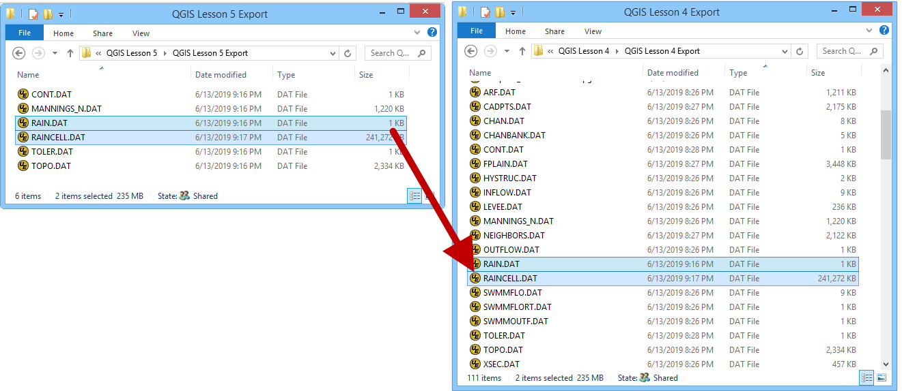

Lesson 5 – Realtime Rainfall Data
Overview
Lesson 5 outlines the process of setting up realtime rainfall data in the raincell.dat file. It is important to perform this tutorial on a Lesson 1 skeleton project. Finish Lesson 1 through Step 5 before performing the following steps.
This video shows the full process of this tutorial.
Required Data
The lesson makes use of QGIS Lesson 1 and rainfall data *.ASC files in QGIS Lesson 5.
File |
Content |
Location |
*.asc |
ASCII Grid File |
QGIS Lesson 5 |
*.rfc |
Rainfall Catalog File |
Project Location C:\Users\Public\Documents\FLO-2D Pro Documentation\Example Projects\QGIS Tutorials
Check these folders to ensure the data is available before starting the lesson.
Step-by-Step Procedure
To build RAIN.DAT and RAINCELL.DAT following these steps.
Complete QGIS Lesson 1 to Step 5;
Set up the rain editor;
Import the rainfall data;
Export the project;
Transfer RAIN.DAT and RAINCELL.DAT files;
Run the simulation.
Step 1: Setup the project
Set up a “Skeleton Project”. RAINCELL.DAT is a large file and it is not necessary to keep it in the regular project GeoPackage. It will slow the model down and the RAINCELL.DAT is not a file that needs to be regenerated.
Follow the QGIS Lesson 1 steps up to Step 5.
Step 2: Rain editor
Set up the Rain Editor widget by checking the Simulate Rainfall, Building Rain and Realtime Rainfall check boxes.
Step 3: Import rainfall data
Click the Import Realtime Rainfall ASCII files button.

Select the folder to import the data.
C:\Users\Public\Documents\FLO-2D PRO Documentation\Example Projects\QGIS Tutorials\QGIS Lesson 5
The plugin will read the catalog file and the ASCII grid files and interpolate the realtime rainfall data to the grid.
The data processing takes time. Track the the progress by the processor by how many auxillary files exist.
Once the processing is complete, click OK to close the dialog box.

Step 4: Export the project
This is a good point to save project. Refer to Step 9 in Lesson 1.

Export the data files to the Project Folder in QGIS Lesson 5.

C:\Users\Public\Documents\FLO-2D PRO Documentation\Example Projects\QGIS Tutorials\QGIS Lesson 5\Lesson 5 Export
All GDS data files will be created in the selected project folder, including RAIN.DAT and RAINCELL.DAT files.

Step 5: Transfer the RAIN.DAT and RAINCELL.DAT files
To use the new Rainfall data it needs to be transferred to a project folder. This project can be started by adding the FLOPRO.EXE Engine to the folder or by calling it from the Plugin.
Copy the RAIN.DAT and RAINCELL.DAT files to the Lesson 4 Export folder.
Replace the original RAIN.DAT file.
C:\Users\Public\Documents\FLO-2D PRO Documentation\Example Projects\QGIS Tutorials\QGIS Lesson 4\QGIS Lesson 4 Export
Step 6: Run the simulation
Click the Run FLO-2D Icon.

Set the Project path and the FLO-2D Engine Path and click OK to start the simulation.